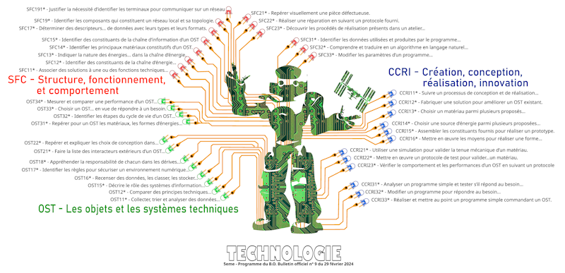

Bienvenu !
Vous trouverez dans ces pages quelques ressources de ma conception et articles à but pédagogique. Ils illustrent mes cours de Technologie de niveau collège. Sentez-vous libre d’utiliser ses documents à la seule condition que cela reste à usage éducatif non commercial.
Bonne lecture,Bruno Jardel
Arbre des compétences - TECHNOLOGIE - Cycle 4
Afin de suivre la validation de ses compétences tout au long du cycle 4, l'élève coche/colorie les petites diodes sur cet arbre. .png 7000psx ici

{kind=link}
Progression 5e-4e-3e TECHNOLOGIE
d'après les programmes de mars 2024et en lien avec les fiches de connaissances de l'Académie de Bordeaux (merci les collègues !)
Document au format Libre Office Calc - contient des macros pour générer les fiches de séquences. .ods ici
Le fichier zip contient en plus les fiches de connaissances : zip ici
Remarque sur la numérotation des compétences détaillées :
Cette numérotation est structurée afin de suivre la progression spiralaire en 4eme et en 3eme,
Par exemple : OST21* concerne les 5eme et se poursuit avec OST21** en 4eme et OST21*** en 3eme,
Même si les intitulés sont légèrement différents les compétences s’enchaînent dans une logique hiérarchique et progressive :
OST21* – Faire la liste des interacteurs extérieurs d’un OST. en 5eme
OST21** – Décrire l’expérience de l’utilisateur (ressenti et facilité d’usage) d’un OST en partant du langage naturel (texte, croquis) pour aboutir aux schémas, Graphiques, algorithmes.en 4eme
OST21*** – Décrire l’expérience de l’utilisateur d’un OST à l’aide de modes de représentation choisis. en 3eme